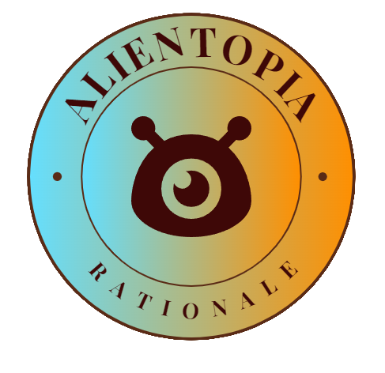

 Selfie with Totoro
Famous for its diverse collection of intricately crafted figurines and collectible models from popular movies and animations around the globe, Figure Museum Jeju is considered an unmissable destination for anime enthusiasts on Jeju Island. Comics aficionados will be thrilled by themed displays featuring meticulously detailed life-sized statues, offering perfect selfie opportunities with Marvel superheroes, Star Wars Stormtroopers, Disney cartoon characters, and Japanese anime figures.

Although the high-quality models in the museum were stunning, what truly left a lasting impression on me was not the precious exhibits but a small incident involving a young couple. At the Totoro display area, a young lady enthusiastically asked her boyfriend to take a photo of her with her beloved character as a keepsake. However, the boyfriend explained that since Totoro was placed in a glass cabinet, the resulting photos would have undesirable glare from reflections, so he refused her request. Disappointed, the couple soon walked away. Yet, not long after, the young lady quietly returned alone, struggling to capture a satisfactory selfie with her adored figure. Unfortunately, her attempts did not yield the desired result. Touched by her persistence, I stepped forward and offered to take the photo for her. Her grateful smile as I took the photo became the highlight of my visit.
 The boyfriend’s practical refusal to take the photo due to potential glare initially seemed reasonable, yet it unintentionally dismissed his partner's simple desire to preserve a joyful memory. The young lady wished to capture a cherished moment with her beloved Totoro, valuing the sentimental experience far more than the photo’s technical perfection. Sadly, the boyfriend prioritized logic over emotional sensitivity, overlooking his girlfriend's feelings. This couple’s story highlights the importance of balancing practicality with empathy in relationships. True connections thrive not only on reason but also on the willingness to prioritize each other's emotional needs, even in seemingly trivial situations.
The boyfriend’s practical refusal to take the photo due to potential glare initially seemed reasonable, yet it unintentionally dismissed his partner's simple desire to preserve a joyful memory. The young lady wished to capture a cherished moment with her beloved Totoro, valuing the sentimental experience far more than the photo’s technical perfection. Sadly, the boyfriend prioritized logic over emotional sensitivity, overlooking his girlfriend's feelings. This couple’s story highlights the importance of balancing practicality with empathy in relationships. True connections thrive not only on reason but also on the willingness to prioritize each other's emotional needs, even in seemingly trivial situations.